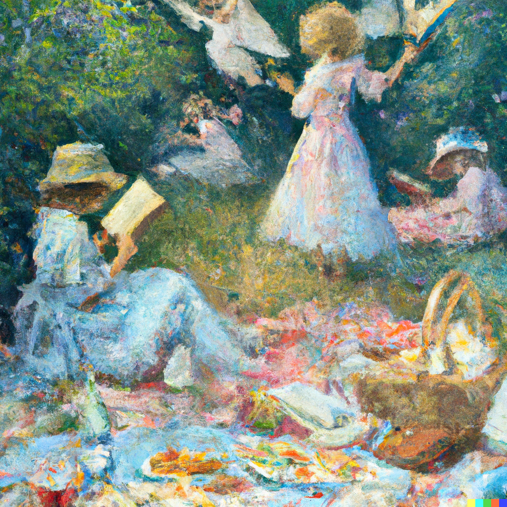

"You look really good in that dress Mary, I knew it was a good purchase the moment I saw it in that store yesterday," Freesia says to Mary as she sets up the picnic with different sandwiches and snacks for the studying session. Mary smiles fondly, she take a seat on the cushion and takes out her textbooks and notebook.
"Thank you Freesia, it was very fun yesterday. I appreciate you both for being my guides for everything and I hope we could be friends for a long time." Mary smiles harder, looking at them both smiling back and nodding.
"Of course Mary, we will be friends forever. This is a promise, even if things try to get in-between us." Gladiolus says while she sprinkle some fairy dust onto our food for more flavor, "I know you spoke about wanting your own garden when you graduate, I'll supply you with fairy dust."
"I don't want to burden you with that, I do not mind going to buy my own," Mary shook her head but she appreciates Gladiolus's generosity. Mary lays down after opening her textbook, thinking about studying all of the herbs and animal parts for different potions is going to take a while. She just cannot believe that there was this magical place without her knowing before and now she is apart of this community.
It has already been a week in this new world, there is still a lot more to learn about this magical world but this is her world now.
| Beginning | Next Day |